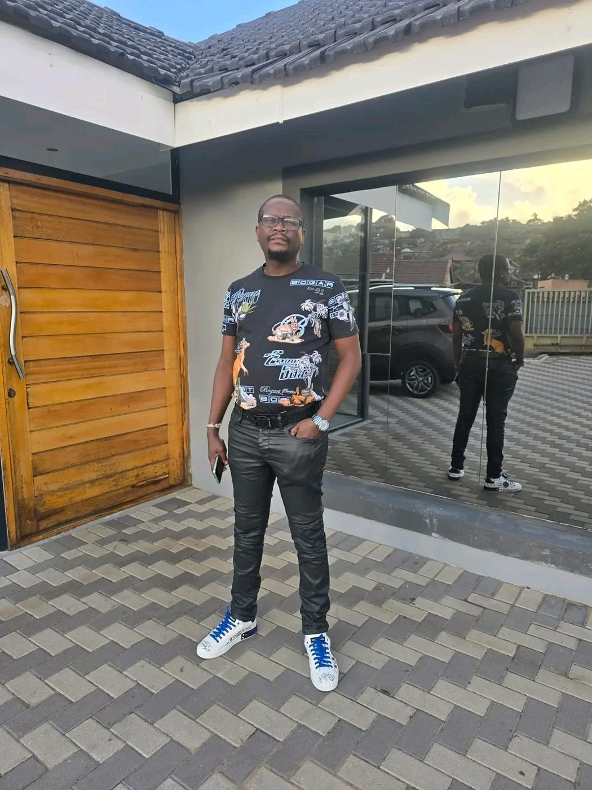

Community
The connections and encouragement people find in being part of Zistorian Nation.
Siyabonga Emmanuel Nkosi — the man, the vision, the legacy. A personal tribute to a journey that continues to inspire.
Behind Zistorian Nation stands Siyabonga Emmanuel Nkosi, a man admired by supporters for his confidence, ambition and the community he has built.
Known by many as Skhotheni wase Mzilay, Denzel Bonyinton and Mr 3 C, he represents more than a familiar name in betting circles to the person who created this tribute. He represents the possibility of building a life with purpose — and remembering the people who matter along the way.
This is an admirer’s celebration of his influence, friendships and family moments, rather than an official biography.

“Success is not only about what you achieve for yourself. It is also about the hope you inspire in others.”
A message from an admirer of Siyabonga and Zistorian Nation.
Supporters have spoken about how betting outcomes have sometimes helped them meet important expenses — from rent and school uniforms to groceries and debts. These are personal accounts shared in admiration, not independently verified results or a promise that betting can provide financial security.
The connections and encouragement people find in being part of Zistorian Nation.
The celebrations, everyday moments and loved ones that give a life meaning.
The ambition to create opportunities and make a positive difference in other people’s lives.
A collection of memories: friendship, celebrations, family, generosity and the everyday moments behind the public name.
Siyabonga, your journey inspires me to aim higher. I admire the freedom you have worked toward, the people around you, and the influence you have built through Zistorian Nation.
My dream is to reach a point where I can step away from traditional employment and still do meaningful things for other people. I hope your journey continues to encourage others to work toward their own goals.
May God continue to bless you, guide you, protect your loved ones and open new doors for you and your community.
The man. The vision. The legacy.